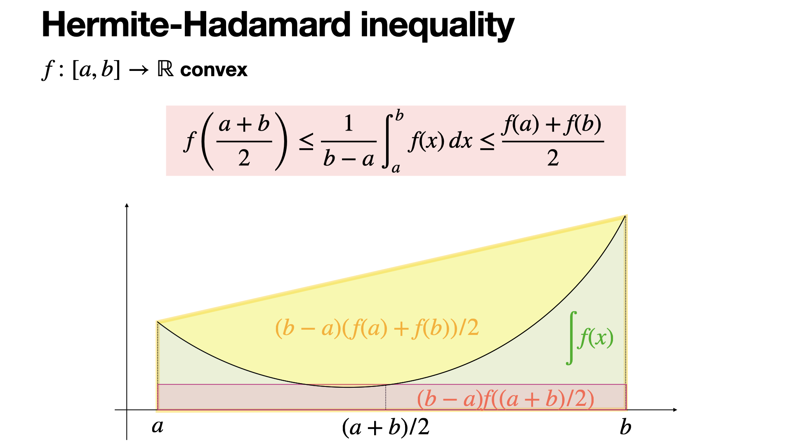

<meta data-alternate="https://freshmark.sunisalex.org/en/posts/math/hermite-hadamard-inequality/" data-article="true" data-canonical="https://freshmark.sunisalex.org/posts/math/hermite-hadamard-inequality/" data-description="写给好奇者的笔记。" data-freshmark-page data-title="Hermite-Hadamard不等式 — Freshmark"><main><header class="container article-header"><a href="/" class="back-link">← 返回全部文章</a><p class="eyebrow article-subject">draft</p><h1>Hermite-Hadamard不等式</h1><p class="article-dek"></p><div class="article-meta"><time datetime="2026-04-25">2026年4月25日</time><span>2 分钟阅读</span><span>draft</span><span class="view-count" data-article-view-count hidden>本文访问量 <strong data-article-views></strong></span><a href="index.md" download>下载 Markdown</a><button type="button" class="article-share" data-share-article data-share-text="" data-share-title="Hermite-Hadamard不等式"><span data-share-label>分享文章</span></button><output aria-live="polite" class="visually-hidden" data-share-status role="status"></output></div></header><div class="article-wrap"><aside class="toc"><div class="toc-head"><p>本文目录</p><button type="button" class="toc-toggle" aria-expanded="false" aria-label="展开或收起目录" data-toc-toggle><span class="toc-toggle-label">目录</span><span class="toc-toggle-icon" aria-hidden="true"></span></button></div><nav aria-label="目录" class="toc-links" data-toc-links><a href="#引入hermite-hadamard" class="toc-level-2">引入(Hermite-Hadamard)</a><a href="#hermite-hadamard-不等式几何对应关系表" class="toc-level-3">Hermite-Hadamard 不等式几何对应关系表</a><a href="#另一种证法claude-补充" class="toc-level-2">另一种证法（Claude 补充）</a></nav></aside><article class="prose"><!--more--><h2 id="引入hermite-hadamard">引入(Hermite-Hadamard)</h2><p>对于凸函数,可以利用其几何特征(面积)推导出<strong>Hermite-Hadamard</strong>不等式(下文统一称为H-H不等式).</p><figure class="prose-figure"><picture class="responsive-picture"><source srcset="hermite-hadamard-inequality.freshmark-05248e616e15-480w.avif 480w, hermite-hadamard-inequality.freshmark-05248e616e15-960w.avif 960w, hermite-hadamard-inequality.freshmark-05248e616e15-1440w.avif 1440w" type="image/avif"><source srcset="hermite-hadamard-inequality.freshmark-05248e616e15-480w.webp 480w, hermite-hadamard-inequality.freshmark-05248e616e15-960w.webp 960w, hermite-hadamard-inequality.freshmark-05248e616e15-1440w.webp 1440w" type="image/webp"></picture><figcaption>P1</figcaption></figure><p><span class="math-expression math-display" data-math-source="\begin{gathered} \boxed{(b-a)f(\frac{a+b}{2})\leq \int_{a}^b f(x)dx\leq (b-a)\frac{f(a)+f(b)}{2}(b\geq a)} \end{gathered}" data-math-display></span></p><p>如P-1所示,对于凸函数<span class="math-expression math-inline" data-math-source="f(x)"></span>,可以做做以下对应:</p><h3 id="hermite-hadamard-不等式几何对应关系表">Hermite-Hadamard 不等式几何对应关系表</h3><table><thead><tr><th style="text-align:left">不等式组成部分</th><th style="text-align:left">图中对应的面积区域</th><th style="text-align:left">几何意义说明</th></tr></thead><tbody><tr><td style="text-align:left"><strong>左侧项：</strong><br><span class="math-expression math-inline" data-math-source="(b-a)f\left(\frac{a+b}{2}\right)"></span></td><td style="text-align:left"><strong>红色半透明矩形</strong><br>(底为 <span class="math-expression math-inline" data-math-source="b-a"></span>, 高为 <span class="math-expression math-inline" data-math-source="f(\frac{a+b}{2})"></span>)</td><td style="text-align:left"><strong>中点矩形面积</strong>：代表在中点处作切线所围成的梯形面积(想一想为什么)。由于函数是凸的，切线完全位于曲线下方，因此该矩形面积最小。</td></tr><tr><td style="text-align:left"><strong>中间项：</strong><br><span class="math-expression math-inline" data-math-source="\int_a^b f(x) dx"></span></td><td style="text-align:left"><strong>绿色填充区域</strong><br>(曲线 <span class="math-expression math-inline" data-math-source="f(x)"></span>&#32;下方的面积)</td><td style="text-align:left"><strong>积分平均值</strong>：代表曲线下的实际面积。在图中，绿色区域覆盖了红色矩形，但被最外层的黄色梯形所包含。</td></tr><tr><td style="text-align:left"><strong>右侧项：</strong><br><span class="math-expression math-inline" data-math-source="(b-a)\frac{f(a)+f(b)}{2}"></span></td><td style="text-align:left"><strong>整个黄色阴影梯形</strong><br>(连接 <span class="math-expression math-inline" data-math-source="(a, f(a))"></span>&#32;与 <span class="math-expression math-inline" data-math-source="(b, f(b))"></span>&#32;的割线下方)</td><td style="text-align:left"><strong>割线梯形面积</strong>：代表连接区间端点的割线（弦）与 <span class="math-expression math-inline" data-math-source="x"></span>&#32;轴围成的面积。由于凸函数的割线位于曲线之上，其面积最大。</td></tr></tbody></table><p>我们下面证明这个不等式: <span class="math-expression math-display" data-math-source="(b-a)f(\frac{a+b}{2})\leq \int_{a}^b f(x)dx" data-math-display></span> 设<span class="math-expression math-inline" data-math-source="f(x)"></span>的原函数为<span class="math-expression math-inline" data-math-source="F(x)"></span>,<span class="math-expression math-inline" data-math-source="g(x)=(x-a)f(\frac{x+a}{2})-(F(x)-F(a))(x\geq a)"></span>&#32;<span class="math-expression math-display" data-math-source="g&#39;(x)=f(\frac{x+a}{2})+\frac{x-a}{2}f&#39;(\frac{x+a}{2})-f(x)" data-math-display></span><span class="math-expression math-display" data-math-source="g&#39;&#39;(x)=f&#39;(\frac{x+a}{2})+\frac{x-a}{4}f&#39;&#39;(\frac{x+a}{2})-f&#39;(x)" data-math-display></span> 因为<span class="math-expression math-inline" data-math-source="f(x)"></span>为凸函数,<span class="math-expression math-inline" data-math-source="f&#39;&#39;(x+a)&gt;0,f&#39;(\frac{x+a}{2})\geq f&#39;(x)"></span>,所以<span class="math-expression math-inline" data-math-source="g&#39;&#39;(x)\geq 0"></span>.</p><p>又<span class="math-expression math-inline" data-math-source="g&#39;(a)=0\leq g&#39;(x),"></span>故<span class="math-expression math-inline" data-math-source="g(x)\ge g(a)=0"></span></p><h2 id="另一种证法claude-补充">另一种证法（Claude 补充）</h2><blockquote><p>本节由 Claude（Anthropic 开发的 AI 模型）补充，附在作者解答之后，并非原作者所写。</p></blockquote><p><strong>先指出上面证明中的一处问题。</strong> <span class="math-expression math-inline" data-math-source="f"></span>&#32;为凸函数时 <span class="math-expression math-inline" data-math-source="f&#39;"></span>&#32;单调递增，而 <span class="math-expression math-inline" data-math-source="\frac{x+a}{2}\le x"></span>，所以应是 <span class="math-expression math-inline" data-math-source="f&#39;\!\left(\frac{x+a}{2}\right)\le f&#39;(x)"></span>，与文中写的方向相反，<span class="math-expression math-inline" data-math-source="g&#39;&#39;(x)\ge0"></span>&#32;因而得不到。另外，要证的是 <span class="math-expression math-inline" data-math-source="(x-a)f\!\left(\frac{x+a}{2}\right)\le F(x)-F(a)"></span>，即 <span class="math-expression math-inline" data-math-source="g(x)\le0"></span>，而不是 <span class="math-expression math-inline" data-math-source="g(x)\ge0"></span>。</p><p><strong>不用导数的证法。</strong> 只用凸性的定义，两侧可以一起证明。记 <span class="math-expression math-inline" data-math-source="m=\frac{a+b}{2}"></span>，<span class="math-expression math-inline" data-math-source="h=\frac{b-a}{2}"></span>。</p><p>左侧：凸性给出 <span class="math-expression math-inline" data-math-source="f(m-t)+f(m+t)\ge 2f(m)"></span>，于是</p><p><span class="math-expression math-display" data-math-source="\int_a^b f(x)\,dx=\int_0^{h}\bigl[f(m-t)+f(m+t)\bigr]dt\ \ge\ 2h\,f(m)=(b-a)f\!\left(\tfrac{a+b}{2}\right)." data-math-display></span></p><p>右侧：令 <span class="math-expression math-inline" data-math-source="x=a+s(b-a)"></span>，<span class="math-expression math-inline" data-math-source="s\in[0,1]"></span>，凸性给出 <span class="math-expression math-inline" data-math-source="f(x)\le(1-s)f(a)+sf(b)"></span>，于是</p><p><span class="math-expression math-display" data-math-source="\int_a^b f(x)\,dx=(b-a)\int_0^1 f\bigl(a+s(b-a)\bigr)ds\ \le\ (b-a)\int_0^1\bigl[(1-s)f(a)+sf(b)\bigr]ds=(b-a)\frac{f(a)+f(b)}{2}." data-math-display></span></p><p>这个证法不要求 <span class="math-expression math-inline" data-math-source="f"></span>&#32;可导，也正好对应图中的两层含义：左侧是“关于中点对称的两点平均值不小于中点值”，右侧是“弦在曲线上方”。</p></article></div><section class="container comments" data-comments data-comments-path="/posts/math/hermite-hadamard-inequality/"><div class="comments-head"><div><p class="eyebrow">评论</p><h2 data-comments-title>评论</h2></div><p>登录后参与讨论。注册时只需验证一次邮箱。</p></div><div class="comment-list" aria-live="polite" data-comment-list><p class="comment-state" data-comment-state>正在加载评论…</p></div><button type="button" class="comment-more" data-comments-more hidden>加载更早的评论</button><div class="comment-auth" data-comment-auth><p class="comment-auth-status" data-auth-loading>正在检查登录状态…</p><div hidden data-auth-guest><form class="comment-auth-form" data-auth-login><h3>登录后评论</h3><label>邮箱<input autocomplete="email" name="email" maxlength="254" required type="email"></label><label>密码<input autocomplete="current-password" name="password" maxlength="128" required type="password"></label><div class="comment-form-foot"><p class="comment-form-status" role="status" data-auth-login-status></p><button type="submit">登录</button></div></form><details class="comment-register"><summary>还没有账号？注册</summary><form class="comment-auth-form" data-auth-register><label>昵称<input autocomplete="name" name="name" maxlength="40" required></label><label>邮箱<input autocomplete="email" name="email" maxlength="254" required type="email"></label><label>密码<input autocomplete="new-password" name="password" maxlength="128" required type="password" minlength="8"></label><p class="comment-auth-hint">至少 8 个字符。</p><div class="comment-form-foot"><p class="comment-form-status" role="status" data-auth-register-status></p><button type="submit">注册</button></div></form></details></div><form class="comment-auth-form" hidden data-auth-verify><p>验证码已发送到邮箱，请在 10 分钟内完成注册。</p><label>六位验证码<input autocomplete="one-time-code" name="code" maxlength="6" required minlength="6" inputmode="numeric" pattern="[0-9]{6}"></label><div class="comment-form-foot"><p class="comment-form-status" role="status" data-auth-verify-status></p><button type="submit">完成注册</button></div></form><div class="comment-auth-user" data-auth-user hidden><p>当前登录： <strong data-auth-user-name></strong> <span data-auth-user-email></span></p><button type="button" data-auth-logout>退出登录</button></div></div><form class="comment-form" hidden data-comment-form><label>评论内容<textarea maxlength="2000" minlength="2" name="body" placeholder="写下你的想法…" required rows="5"></textarea></label><p class="comment-markdown-hint">支持 Markdown：加粗、链接、引用、列表和代码。</p><label aria-hidden="true" class="comment-honeypot">Website<input autocomplete="off" name="website" tabindex="-1"></label><div class="comment-form-foot"><p class="comment-form-status" role="status" data-comment-form-status></p><button type="submit" data-comment-submit>发表评论</button></div></form></section></main>